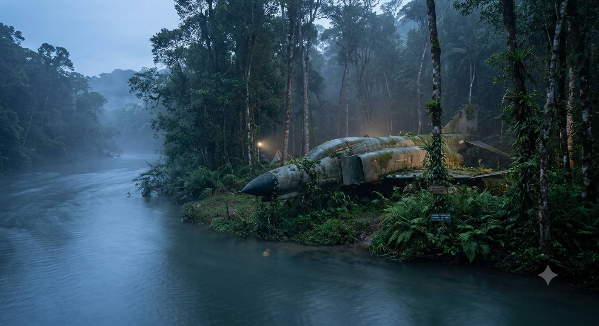
Você é um piloto de caça e está fazendo uma missão secreta do governo, e tudo está rolando bem, até que você percebe um motor em chamas e o avião começa a cair, então você ejeta e cai numa floresta no território de um país inimigo, mas você não foi detectado, por enquanto, então você segue adiante. Então você se depara com um rio.
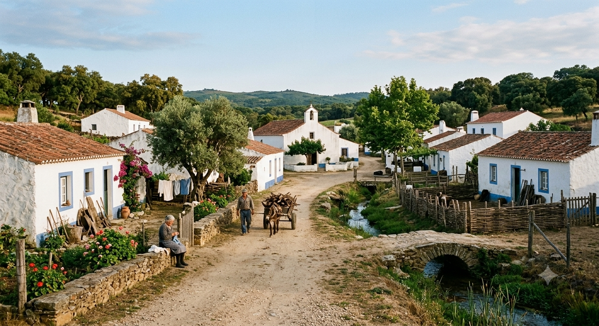
Você encontra uma pequena vila com pacíficos cidadãos, que entendem o seu lado e te ajudam com comida e água, e você aceita.
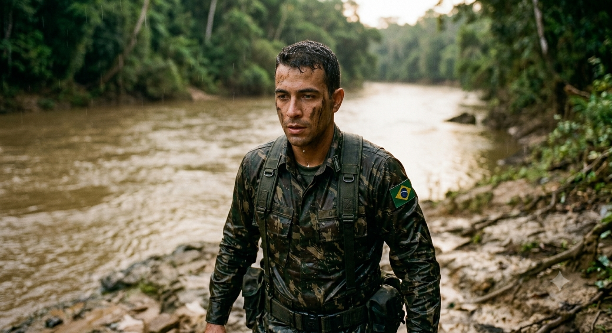
Você entra no rio, percebe a água gelada, mas continua firme na sua decisão: Atravessar o rio. Então você passa, quase se afoga, leva três mordidas de piranhas, se resfria, perde sangue, mas atravessa e segue firme.
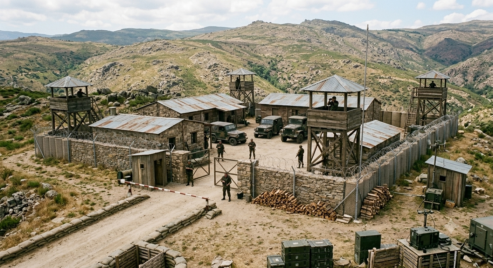
Você se depara com um posto militar daquele país, então você pensa em duas opções:
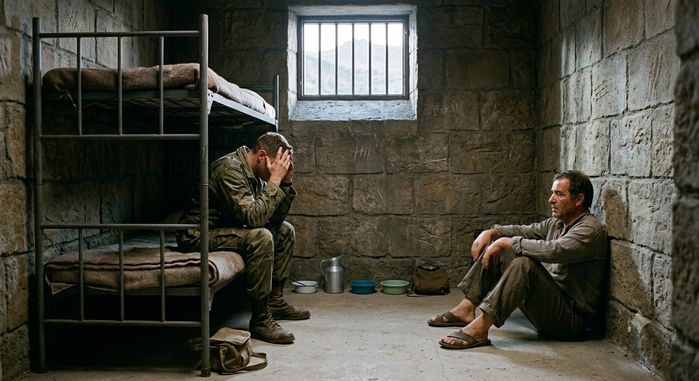
O governo fazia um recenseamento da população e você foi encontrado e identificado. Você e o dono da casa onde você estava são presos.
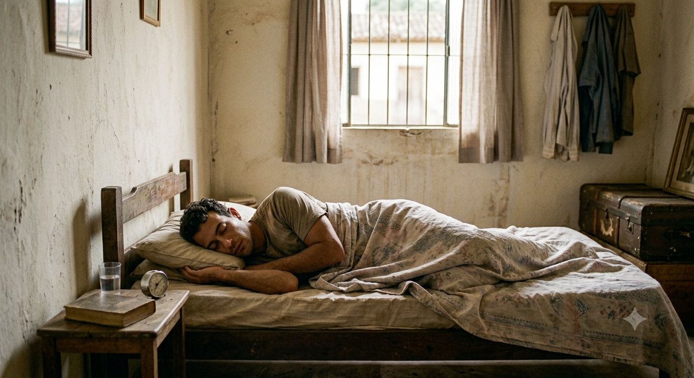
Pelo frio e fraqueza, você desmaia de cansaço, e acorda numa casa, com os ferimentos tratados e roupa seca.
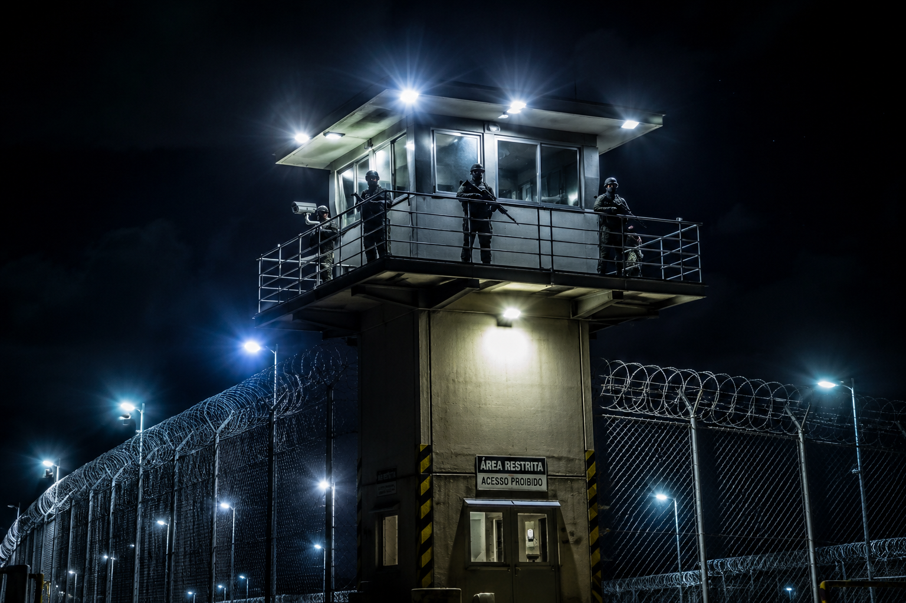
Você vê uma torre de vigia com homens armados e muita iluminação.
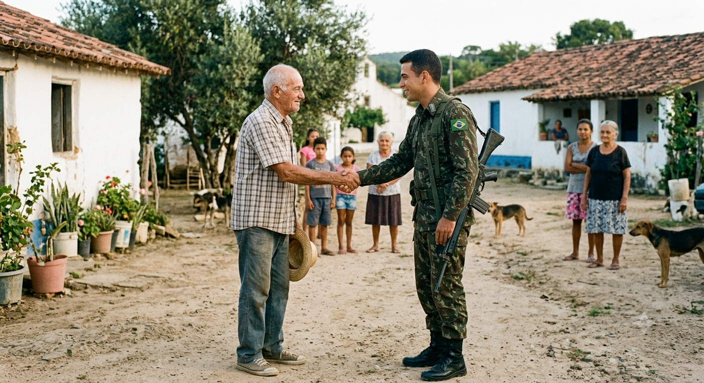
Ele gosta de você e convida para você ficar
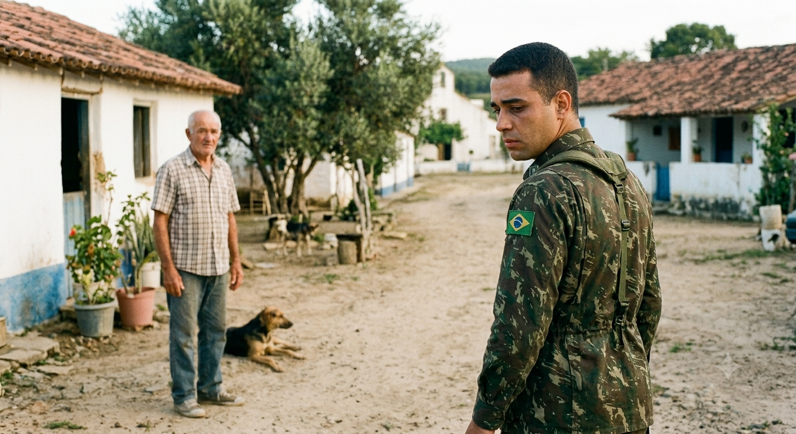
Você se arrepende e volta para lá para agradecer.
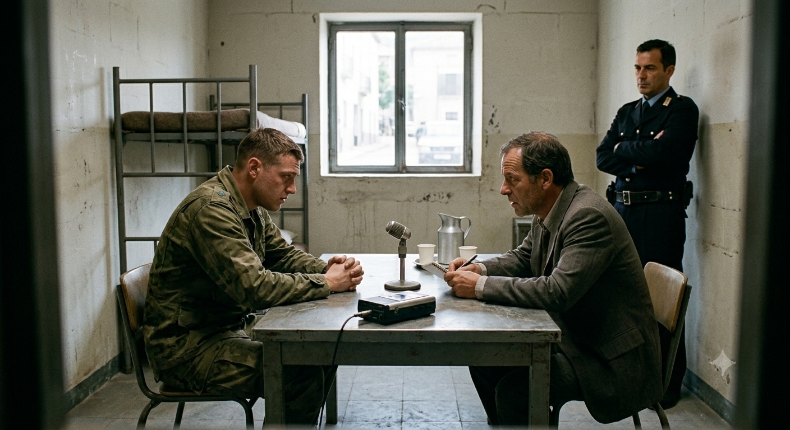
Você é pego, e fazem uma série de perguntas.
Você chega na capital e entra escondido no aeroporto.
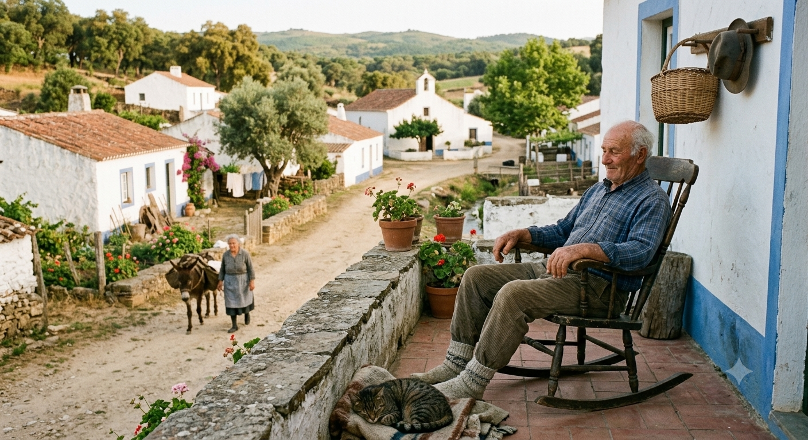
Você envelhece e termina sua vida lá.
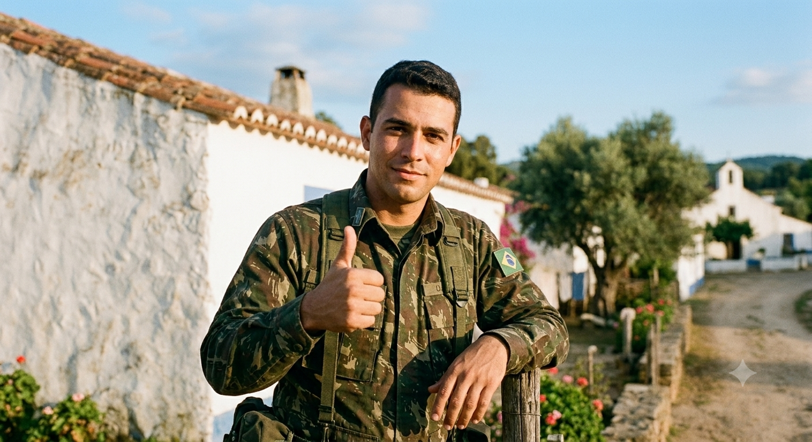
FIM DE JOGO
Você consegue voltar em segurança para casa e segue a vida.
Você é libertado, e consegue voltar em segurança para casa e segue a vida.
Eles descobrem a verdade por testemunhas e você é preso.